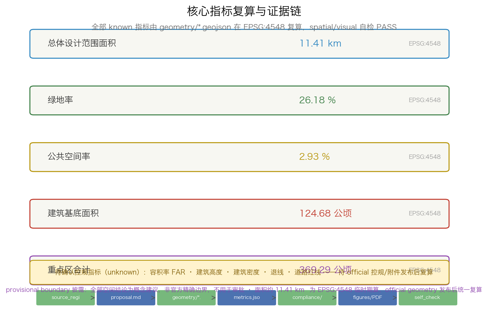

京张智轨：百年铁轨与AI智能轨的双轨叙事城市设计概念方案
以「双轨叙事」为总概念：百年京张铁轨为遗产轨，AI创新带为智能轨，两轨并行、在遗址公园缝合。回应公告1.3-1.5与agent.1-agent.6全部任务，基于provisional boundary生成可复核formal方案包。
京张智轨：百年铁轨与AI智能轨的双轨叙事城市设计概念方案
> 一百年前，詹天佑用「人」字形线路让火车翻过八达岭； > 一百年后，我们把这条铁轨变成一座城市的双轨——一轨承载历史，一轨开向未来。 > 本方案所有空间结论均为概念建议、参考方案或可供专业团队深化研究，不构成政府审定结论。
设计依据与资料清单
本 formal 方案的第一依据是北京市规划和自然资源委员会海淀分局发布的《百年京张AI创新带城市设计国际方案征集资格预审公告》[source:OFFICIAL-ANNOUNCEMENT]，其 1.3、1.4、1.5 条款规定三层范围、设计任务与成果深度，主控全案目标。面向智能体开源征集的任务书摘录以 brief/site-package/agent_taskbook.json 为机器可读依据[source:AGENT-TASKBOOK]，补充三大定位、五大功能、三区两翼、六项 agent 任务与十条共创原则。仓库的 site-package（设计边界、允许设计空间、枚举、区间、标准、schema 与视觉建议）与 data/source_registry.json 构成机器可读工作层[source:SITE-PACKAGE][source:SOURCE-REGISTRY]，处理资料包 data/processed/agent_fact_pack.md 及其 CSV 表是阅读导航层[source:PROCESSED-FACT-PACK]，不替代原始来源。
由于官方精确红线与三处重点区 polygon 尚未随公开资料发布，本方案按规则采用 brief/site-package/geometry/provisional_boundaries.geojson 中的临时粗略边界[source:BOUNDARY-SOURCE][source:KEY-AREA-SOURCE]，在 [data:geometry/site_boundary.geojson#SITE-001] 与 [data:geometry/key_areas.geojson#PROV-KEY-001] 中显式标记为 provisional_constraint 与 official_boundary=false，仅用于方案生成、自检、可视化和设计讨论，不作为 official redline、审批依据或精确面积依据。组织方数据缺口不阻断内容评分；官方 polygon 发布后，本方案全部边界、用地、建筑、道路、绿地、分期与指标将统一复算。
正文证据遵循「来源-章节-图层-指标-图纸-自检」的证据链规范[standard:PROJECT-OFFICIAL-ANNOUNCEMENT][standard:PROJECT-AGENT-OPEN-CALL-TASKBOOK][standard:MOHURD-URBAN-DESIGN-MEASURES][standard:MOHURD-CONTROL-DETAILED-PLANNING][standard:MNR-LAND-USE-CLASSIFICATION-GUIDE][standard:MOHURD-ARCH-DESIGN-DEPTH-2016][depth:existing_conditions_diagnosis]。设计方案覆盖公告 1.3.1 至 1.5.3.3 全部必选任务，并以 compliance_matrix.json、standard_matrix.json、design_depth_matrix.json 三张矩阵与 self_check.json 记录响应证据。下文每个章节都解释设计判断、空间图层、指标含义、标准依据与资料缺口，而不是目录式罗列 JSON。

三层范围工作框架
方案按公告确定的三层范围组织工作，并把它转译为「一带双轨、三核两翼、多点驿」的空间工作框架[depth:three_level_scope_framework]。统筹研究范围（43.6 平方公里，geometry/site_boundary.geojson 之外由 key_areas.geojson 锚定）回答 AI 创新生态与未来城市形态问题；总体设计范围（11.4 平方公里，本方案提交边界 [metric:site_area_sqm]）承担城市更新与控规深度城市设计；重点区域范围（368.4 公顷，[metric:key_area_total_sqm]，[metric:key_area_count]=3）承担三处详细设计。
「一带」是京张遗址公园活力带——一条南北贯通的遗产绿脊，把遗址文化、公共空间与慢行系统缝合在一起。「双轨」是本方案的核心意象：西侧**遗产轨**承载百年京张文化叙事与遗址保护，东侧**智能轨**承载 AI 场景、产业与公共服务；两条轨在中段原点社区与南段大钟寺发生「换乘」，完成从历史到未来的叙事接力。「三核」对应公告三处重点片区（众智园、北京AI原点社区、大钟寺AI产业聚集区），「两翼」对应中关村科技服务翼与小月河场景赋能翼，「多点驿」是一系列 AI 驿站与朝圣地标节点。
三层范围之间的传导关系是：统筹层决定产业链与城市形态判断，总体层把判断落实为用地、建筑、道路、绿地与公共空间图层，重点层验证具体地块、建筑、交通与 AI 场景的可实施性。geometry/land_use.geojson 完整覆盖总体设计边界且无重叠无缝隙，是三层范围落到空间的主要载体；geometry/phasing.geojson 表达实施分期，compliance_matrix.json 逐条映射公告与 agent 任务。
| 层级 | 设计问题 | 本方案回答 | 数据落点 | | --- | --- | --- | --- | | 统筹研究范围 | AI 生态与未来城市形态如何组织 | 高校策源—开源协作—企业转化—场景开放—国际传播五段创新链 | [source:AGENT-TASKBOOK]、[standard:PROJECT-AGENT-OPEN-CALL-TASKBOOK] | | 总体设计范围 | 城市更新与控规深度如何落图 | 双轨结构、三核锚点、蓝绿慢行复合环、更新项目与分期 | [data:geometry/land_use.geojson#LU-001]、[data:geometry/roads.geojson#ROAD-001] | | 重点区域范围 | 三处片区如何达到详细设计深度 | 分别提出定位、空间动作、AI 场景与实施依赖 | [data:geometry/key_areas.geojson#PROV-KEY-001] 等 |

统筹研究范围产业与未来城市研究
统筹研究范围的核心命题是构建世界级 AI 创新生态。本方案提出「五段创新链」：**高校策源**（海淀高校院所与清华、北航、北邮等资源）→ **开源协作**（开源社区、代码托管与贡献墙）→ **企业转化**（全栈自主、孵化加速与头部企业）→ **场景开放**（AI+ 医疗、教育、交通、公共服务的测试验证）→ **国际传播**（全球 AI 活动、开发者荣誉体系与朝圣地标）。这条链回应公告 1.3.1「构建世界级 AI 创新生态体系」[standard:PROJECT-OFFICIAL-ANNOUNCEMENT]，并与 agent.2 的 5-8 个全球生态案例一一映射（见 AI 创新生态章节）。
未来城市形态研究回答 AI 如何改变工作、生活、社交、学习与公共服务。本方案的判断是：AI 城市不应是把技术标签贴在旧空间上的「贴片」，而应让空间本身变成可感知、可验证、可复算的试验场。因此统筹层提出「场景密度」概念：以 AI 驿站为基本单元，把 10 张场景卡、3 个测试验证场景与 5 类用户画像落实为可定位的功能区与节点，并由 geometry/public_space.geojson#PUBLIC-001、geometry/green_space.geojson#GREEN-001 与 [metric:public_space_ratio]、[metric:green_ratio] 提供空间证据。命名与视觉识别（见 agent.1 章节）服务三大定位的整体辨识度，不替代法定规划控制。
区域协同方面，统筹层不新增伪精确红线，而是通过创新链与海淀 1+X+1 产业体系、三区两翼布局衔接，形成与北纬社区、未来科学城、怀柔科学城、经开区及京津冀的要素流动关系。所有产业空间布局均表述为概念建议，招商、资金与政策安排不写成已确定事项，涉及容积率、建筑高度、拆改留等结论一律标注为待正式控规确认[depth:development_intensity_controls][depth:overall_spatial_structure]。
总体设计范围城市更新与控规深度城市设计
总体设计范围要求达到控制性详细规划的城市设计深度。本方案以「双轨结构」统领城市更新：西侧遗产轨沿遗址公园布置文化、公共与绿色空间，东侧智能轨沿学院路—大钟寺方向布置科研、产业与人才服务空间，两条轨之间以横向绿廊与驿站节点缝合。geometry/land_use.geojson 依据 [standard:MNR-LAND-USE-CLASSIFICATION-GUIDE] 表达科研（0802）、教育（0804）、商业服务（05）、居住（0701）、社区服务（0702）、公园绿地（1401）与留白用地（16）七类，14 个用地特征完整覆盖总体设计边界 [metric:land_use_parcel_count]，无重叠、无缝隙，全部以 design_proposal 角色标注。
城市更新遵循「保留-改造-新建-留白」四类逻辑[depth:retain_renovate_demolish]：遗址公园与文保对象保留，现状产业与高校界面以改造提升为主，重点片区内部以更新与适度新建支撑 AI 功能，预留弹性留白用地应对产业不确定。geometry/buildings.geojson 以概念尺度建筑组团表达 632 个基底 [metric:building_count]，总基底面积 [metric:building_footprint_area_sqm]，仅作为形态推演，不代表已确认建设规模。建筑高度、体量与风貌控制由 [depth:height_massing_character] 管理，在缺乏官方控规条件下全部列为待确认，不给出伪精确数值。
产业功能与空间组织上，总体层把「三区两翼」转译为用地关系：众智园片区以科研与留白用地支撑全栈自主创新，原点社区以教育与科研用地衔接高校，大钟寺片区以商业服务与科研用地形成智能经济集聚，中关村翼与两翼的科技服务功能通过横向廊道渗透。控规深度要求的地块划分、开发强度、退线、道路红线与设施标准，因缺少官方控规条件，统一列入 assumptions（A-CONTROLS-001）与风险章节，作为正式深化前置条件[depth:development_intensity_controls][source:SOURCE-REGISTRY]。
重点区域详细设计
三处重点片区是方案的可实施性验证层[depth:three_key_area_detailed_design]。本方案为每一处提出差异化定位、空间动作、AI 场景与实施依赖，全部表述为概念建议，不越过政府审定。
**众智园AI自主创新加速区**（geometry/key_areas.geojson#PROV-KEY-001，约 192.1 公顷）：定位为「花园型全栈自主创新街区」。空间动作：沿清河界面打造低碳创新交往廊，在园区内部布置开放测试场、标准治理沙盒与安全评测展示区，以绿色空间承载自主模型测试与低碳算力体验。AI 场景：自主模型红队测试、标准制定工作坊、安全治理展示、端侧算力驿站。实施依赖：河道蓝线、生态与防洪条件，以及国家人工智能平台等资源位。
**北京AI原点社区**（geometry/key_areas.geojson#PROV-KEY-002，约 104.3 公顷）：定位为「近校型成果转化与人才社区」。空间动作：组织校区、园区、街区慢行缝合，补足成果发布厅、人才特区服务、开源协作空间与居住生活配套，围绕轨道站点推进一体化接驳。AI 场景：开源发布厅、成果转化街、代码贡献墙、AI 教育体验点。实施依赖：校区边界、权属与首层业态，开源体系与人才政策衔接。
**大钟寺AI产业聚集区**（geometry/key_areas.geojson#PROV-KEY-003，约 72.0 公顷）：定位为「城市型智能经济与国际交往街区」。空间动作：围绕大钟寺站推进四象限步行连通，更新重点企业周边公共环境，布置国际路演客厅、智能体与智能终端展示、内容消费与数据要素服务界面。AI 场景：国际路演客厅、数据要素会客厅、智能体展示窗、站前广场智慧导览。实施依赖：轨道站点、道路交叉口、市政管线与商业服务条件。
三处重点区的空间联系：众智园与原点社区之间以纵向智能轨连通，原点社区与大钟寺之间以遗产轨接续，形成「从加速、到原点、再到集聚」的创新空间序列。compliance_matrix.json 分别覆盖 1.5.3.required、1.5.3.1、1.5.3.2、1.5.3.3，A3 文册与 A0 展板包含重点片区总图与详图，HTML 页面可切换查看三处片区。

AI 创新生态、人才画像与 AI+ 场景
本节把 agent.2 与 agent.3 的可读成果写入正文。**全球 AI 创新生态案例（agent.2，5-8 个）**：本方案研究并转化以下案例的机制而非照搬名称——1）硅谷斯坦福周边的「近校孵化走廊」（近校成果转化与人才特区）；2）波士顿 Kendall Square 的「药谷+算力」混合街区（科研用地与公共服务混合）；3）深圳南山「全栈硬件+开源软件」生态（开源协作与供应链服务）；4）特拉维夫「初创密度+政府场景采购」（场景开放与政府测试采购）；5）苏黎世/慕尼黑「产业—大学双轨」园区（遗产与产业的并行发展）；6）杭州未来科技城「人才社区+场景运营」模式（人才服务与场景运营闭环）；7）东京/横滨临海「数智湾区+国际会展」运营（全球活动与品牌资产）。这些案例被提炼为「近校转化、开源协作、场景开放、人才特区、品牌运营」五条可转化机制，落到用地、建筑与公共空间图层[source:AGENT-TASKBOOK]。
**用户画像（agent.3，5 类）**：
| 用户画像 | 典型需求 | 空间响应 | 自检/隐私边界 | | --- | --- | --- | --- | | 开源开发者 | 发布、协作、测试、社区声誉 | 原点社区开源发布厅、公共代码墙、夜间协作空间 | 不采集个人行为轨迹，活动数据只做聚合统计 | | 初创团队 | 低成本办公、算力入口、产品试验场 | 众智园共享测试场、端侧算力服务点、标准治理咨询 | 算力与数据服务需另行授权 | | 头部企业访客 | 展示、商务、国际接待、人才招聘 | 大钟寺国际路演客厅、轨道站点接驳、重点企业周边公共空间 | 企业标识与案例须清权 | | 周边居民 | 通勤、休闲、社区服务、低扰动更新 | 遗址公园慢行环、社区服务嵌入、夜间照明分级 | 不将居民画像用于商业推荐 | | 高校师生 | 成果转化、跨校协作、日常慢行 | 校区-园区慢行缝合、成果转化驿站、AI 教育体验点 | 校园数据与科研成果需授权 |
**AI 场景卡（agent.3，10 张）**：
| 场景卡 | 空间载体 | 设计说明 | | --- | --- | --- | | 01 开源发布厅 | 北京AI原点社区 | 面向高校、开源社区和初创团队，提供成果发布、代码贡献展示与小型路演空间 | | 02 安全治理沙盒 | 众智园 | 将标准制定、安全评测、模型红队测试转译为可参观、可预约、可监管的展示协作节点 | | 03 端侧算力驿站 | 总体设计范围节点 | 与公共服务、企业服务和低碳能源策略结合的待深化新基建原型 | | 04 AI 慢行导航 | 京张遗址公园活力带 | 用可解释导视与低侵入传感识别慢行断点、拥挤节点与无障碍需求 | | 05 大钟寺国际路演客厅 | 大钟寺AI产业聚集区 | 服务智能体、智能终端与内容消费企业的展示、洽谈、媒体发布与国际交流 | | 06 清河低碳创新廊 | 众智园临清河界面 | 把绿色空间、雨洪、步行骑行与 AI 展示结合，作为园区公共客厅 | | 07 近校成果转化街 | 北京AI原点社区 | 面向高校成果转化，组织孵化、展示、法务、知识产权与投融资服务 | | 08 数据要素会客厅 | 大钟寺片区 | 以合规、授权、可审计为前提，展示数据要素与数字资产流通的城市服务界面 | | 09 AI 生活服务样板街 | 社区与商业交汇处 | 将 AI+ 医疗、教育、法律、生活服务落到可运营的小尺度街区空间 | | 10 全球 AI 活动周路线 | 一带公共空间系统 | 形成从遗址文化、开源社区、产业展示到国际路演的可步行、可传播体验路线 |
**产业测试验证场景（agent.3，3 个）**：01 自主模型红队测试场（众智园，标准+安全评测+模型测试，边界：不接入敏感生产数据）；02 城市智能体公开沙盒（原点社区，交通/公共服务场景推演，边界：输出仅供参考、人工复核）；03 数据要素流通沙盒（大钟寺，合规授权可审计的交易测试，边界：不处理个人隐私数据）。三个测试场景均写明运营主体假设、风险控制与人工复核机制，不写成已批准运营。
场景-空间-运营映射通过 geometry/public_space.geojson、geometry/green_space.geojson、geometry/roads.geojson 与指标 [metric:public_space_ratio]、[metric:green_ratio] 落到具体图层。所有 AI 治理建议遵守数据最小化、公开来源、可解释与人工复核原则[depth:traffic_rail_slow_parking]，城市智能体不替代规划审批，不输出未经授权的个人画像。
用地、建筑规模与拆改留方案
用地方案依据 [standard:MNR-LAND-USE-CLASSIFICATION-GUIDE] 形成 14 个用地特征 [metric:land_use_parcel_count]，七类用地完整覆盖总体设计边界 [metric:site_area_sqm]，其中科研（0802）与留白（16）用地布局于北段众智园方向，教育（0804）用地布局于中段高校方向，商业服务（05）用地布局于南段大钟寺方向，居住与社区服务（0701/0702）作为职住平衡与人才生活配套均匀分布，公园绿地（1401）沿遗址活力带连续布置[depth:land_use_layout]。绿地率 [metric:green_ratio] 与公共空间率 [metric:public_space_ratio] 由 geometry/green_space.geojson 与 geometry/public_space.geojson 复算。
建筑方案以「保留-改造-新建-留白」四类表达拆改留逻辑[depth:retain_renovate_demolish]：遗址公园与文保对象明确保留；现状产业、高校与社区界面以改造提升为主；重点片区内部以更新与适度新建支撑 AI 功能；弹性留白用地应对产业不确定。geometry/buildings.geojson 的 632 个概念基底 [metric:building_count]、总基底面积 [metric:building_footprint_area_sqm] 仅作形态推演。容积率、建筑高度、建筑密度、退线与控制线等法定指标，因无官方控规条件，全部列为 unknown/pending_control（见 metrics.json），不制造精确感[depth:development_intensity_controls][depth:height_massing_character][source:BOUNDARY-SOURCE]。
拆改留的具体地块结论依赖权属、现状建筑与控规资料，当前 missing_data_checklist.csv 中均未提供，本方案只提出方法与待校准清单，不编造拆改留结论。A3 文册给出更新项目清单与指标复核表，A0 展板表达空间结构与重点片区，HTML 页面提供指标与图层联动查看。
交通、轨道、市政与公共服务设施
交通方案回应公告对轨道站点一体化、道路微循环、慢行断点缝合与绿色交通的要求[depth:traffic_rail_slow_parking]。geometry/roads.geojson 表达双轨之间的道路组织：西侧主干路、东侧次干路、中部绿道（greenway）与六条横向联络路形成网架，总路网长度约 [metric:road_length_km] 公里。重点接驳对象包括北五环跨环路节点、五道口、清华东路西口、大钟寺站与重点企业周边；轨道站点一体化作为概念建议提出，不涉及桥隧工程与线位结论。所有交通结论保持在提交边界内，因边界为 provisional，仅作临时设计讨论。
市政与公共服务设施覆盖 AI 产业服务设施、创新服务平台、人才生活服务、新型基础设施（端侧算力、分布式能源、感知设施）与传统市政融合[depth:municipal_new_infrastructure]。缺少管线、能源、排水、防洪、消防等工程资料时，列为正式深化前置条件，写入 assumptions（A-CONTROLS-001）与风险章节，不写成审定条件。geometry/constraints.geojson#CONSTRAINTS 记录文保控制区、现状水系（清河、小月河示意）与遗址带示意，作为不可编辑的锁定参考层，供交通与设施布局避让。
蓝绿空间、公共空间与城市风貌
蓝绿空间方案以京张遗址公园活力带为骨架[depth:blue_green_public_space]，清河、小月河为两侧水系支撑，形成南北贯通、东西连通的慢行绿环。geometry/green_space.geojson 表达沿活力带连续布置的公园绿地，[metric:green_ratio] 由 EPSG:4548 复算；geometry/public_space.geojson 表达众智园创新广场、原点社区开源广场、大钟寺站前广场、活力带中央广场与小月河场景实验广场五处公共空间，[metric:public_space_ratio] 同步复算。蓝绿系统与慢行、轨道接驳、AI 场景节点在 assets/figures/mobility-bluegreen.png 中综合表达。
城市风貌融合百年京张铁路文化、中关村创新文化与 AI 新文化：以「铁轨」作为符号母题，屋顶、铺装、公共艺术与导视系统采用轨距节奏与信号色彩体系；利用清华园车站旧址等文化资源组织导览路线。风貌控制分清官方管控（文保、蓝线）、设计建议与待确认条件，严禁无依据的伪精确控制线。城市设计管理办法要求统筹建筑布局、景观风貌、公共空间与城市特色，本节引用 [standard:MOHURD-URBAN-DESIGN-MEASURES] 落实。

更新项目清单、实施政策与分期计划
实施方案形成可审查的更新项目清单，说明位置、类型、功能、依赖、阶段、风险与评估指标[depth:renewal_project_list][depth:phasing_implementation]。
| 项目编号 | 项目名称 | 类型 | 主要依赖 | 证据引用 | | --- | --- | --- | --- | --- | | JZ-01 | 京张遗址公园慢行断点缝合 | 公共空间/交通 | 道路红线、桥下空间、交通组织复核 | [data:geometry/roads.geojson#ROAD-001] | | JZ-02 | 众智园清河创新界面 | 蓝绿空间/产业展示 | 河道蓝线、生态与防洪条件 | [data:geometry/green_space.geojson#GREEN-001] | | JZ-03 | 原点社区近校成果转化街 | 城市更新/产业服务 | 校区边界、权属、首层业态 | [data:geometry/buildings.geojson#BLDG-0001] | | JZ-04 | 大钟寺站四象限步行连通 | 轨道一体化/慢行 | 轨道站点、道路交叉口、市政管线 | [data:geometry/public_space.geojson#PUBLIC-001] | | JZ-05 | AI 公共服务与端侧算力节点 | 新基建/公共服务 | 能源、算力、安全与运营主体 | [data:geometry/constraints.geojson#CONSTRAINTS] | | JZ-06 | 全球 AI 活动周公共路线 | 运营/品牌 | 公共空间许可、活动安全、版权清权 | [data:geometry/phasing.geojson#PHASE-P1] |
分期以 geometry/phasing.geojson 表达：P1 首期（南段大钟寺与门户，[metric:phasing_area_sqm_p1]）聚焦产业集聚与站城一体化；P2 二期（中段原点社区与活力带）聚焦近校转化与慢行缝合；P3 三期（北段众智园）聚焦全栈创新与留白用地启动。实施政策覆盖城市更新统筹、空间供给、运营机制、产业服务、公共参与、数据治理与产权协同；无权属、资金、实施主体与审批路径的项目一律写成实施风险而非承诺落地。征集周期（100 天）与实施分期明确区分。
面向智能体任务书核心交付：品牌、地标、文化叙事与长期运营
本节对 agent.1、agent.4、agent.5、agent.6 提供独立的可审阅交付物，不低于任务书的必选产出数量与深度[standard:PROJECT-AGENT-OPEN-CALL-TASKBOOK][depth:phasing_implementation]。
品牌身份与视觉体系（agent.1）
**命名体系**：主名称「京张智轨」，英文主名称「JZ SmartTrack · The Jing-Zhang AI Innovation Belt」，缩写「JZ-SMT」。命名层级四级：第一级为一带总称「京张智轨 JZ SmartTrack」；第二级为三个核心区产品名——「智源·众智园 (OriginAI Park)」「原点·AI社 (NeXus Community)」「钟智·AI港 (BellPort AI)」；第三级为业态品牌——「智轨开发者周 (SmartTrack DevWeek)」「智轨场景开放日 (SmartTrack Scenario Day)」「智轨开源大会 (SmartTrack OSS Summit)」；第四级为公共设施命名——「智轨驿站 (SmartTrack Station)」「智轨实验室 (SmartTrack Lab)」。整个体系以「轨」为纵向记忆符号，以「智」为横向功能锚点，面向开发者、企业与公众区分传播语境。
**Logo 方向**（概念建议，非终稿）：以京张铁路「人字形」折线为造型核心，与电路板轨道的折线结构融合，形成「Z」字形符号；搭配「JZ」字母组合与小写「smarttrack」字标。标准色：京张藏青 (#1F2A44)、铁轨紫 (#8E44AD)、信号橙 (#E67E22)、AI 蓝灰 (#2E86C1)。辅助色：石青 (#77B87C)、站牌金 (#B7950B)。应用扩展：导视系统、数字屏、工牌、地铁站名、活动横幅、贡献者纪念章。Logo 方向非最终设计，未经授权使用他人商标或肖像。
**视觉识别与总体结构图**：见 assets/figures/site-overview.png（双轨叙事总体概念）与 assets/figures/land-use-structure.png（三层范围传导与用地结构）。A0 展板包含品牌色板与命名层级图。三大定位（百年京张文化带、都市AI生活体验带、AI融合创新带）分别对应紫色遗产线、橙色生活线、蓝色创新线的空间映射。全部字体、色彩与图形建议均为概念方案，不可在未获授权的情况下用于正式发布。
AI 公共空间、地标与荣誉体系（agent.4）
**三处 AI 朝圣地标（概念目录）**：
| 地标 | 位置（概念） | 设计思路 | 公共空间载体 | | --- | --- | --- | --- | | 铁轨起点纪念地「1909·起点石」 | 京张遗址公园南端（大钟寺段） | 以詹天佑时代铁路铸铁构件为灵感，设置一面由开源代码片段铸成的钢铁纪念墙；墙面实时显示从本仓库 PR 中提取的贡献者 GitHub ID；夜间透过缝隙发出信号灯颜色。仅展示已同意展示的贡献者名，不公开任何个人数据。 | [data:geometry/public_space.geojson#PUBLIC-001] 大钟寺站前广场 | | 开源贡献荣誉墙「CODE·WALL」 | 北京AI原点社区 | 沿遗址步道一侧设置约 50m 长的玻璃/金属荣誉墙，每季度更新本赛事及后续社区中入选方案的贡献者名称（需清权许可），墙体内嵌低功耗 e-ink 屏滚动展示里程碑事件（1909 京张通车→1952 中关村规划→2026 AI 开源征集→…）。物理公共墙体不会自动采集数据。 | [data:geometry/public_space.geojson#PUBLIC-001] 原点社区开源广场 | | 全球开发者荣誉墙「GLOBAL DEV HALL」 | 众智园核心门户 | 一个环形廊道结构，内壁按年份记录本 AI 创新带最杰出的开源贡献、落地项目和 Agent 里程碑。每年由专业评审团与社区投票共同决定入选者。外壁为参观者互动界面（概念：二维码+线下轻量互动），展示入选者简介、项目链接和可复现数据集。 | [data:geometry/public_space.geojson#PUBLIC-001] 众智园创新广场 |
**荣誉展示体系**：以上三处地标构成「贡献者可记忆」的物理与数字混合荣誉系统，与任务书的共创原则 charter.9（贡献可记忆）对应[source:AGENT-TASKBOOK]。荣誉展示策略分三级：永久碑刻（入选并落地的正式成果的贡献者）、年度表彰（每届创意类入选方案的 Agent 名称与 GitHub ID）和持续滚动（PR 参与与社区活跃者）。所有展示均须取得贡献者明确授权，不展示未经许可的个人信息。
**公共空间组件库**（概念建议，供专业团队深化）：以「轨距 1435mm」和「京张信号色彩系统」为模数控制，构建一套可复用的城市家具原型——轨距长凳/座凳（长度模数 1.435m 的倍数）、信号灯柱（颜色承继铁路信号红黄绿，增添紫色「AI 信号」）、站台铺装拼花（枕木肌理 AI 化转译）、代码贡献碑（小型预制混凝土碑，嵌入 NFC 标签，链接到 GitHub 仓库）。组件库非现成产品或工程详图，而是统一语法下的空间原型指南。
文化叙事（agent.5）
三段式文化叙事：「轨道之始」（1905-1909，詹天佑建造京张铁路，人字形线路成为中国自主工程的象征）→「大脑之核」（1952-2020s，中关村从电子一条街到全球科技中心）→「智能之轨」（2026-，AI 原生社区与开放共创）。空间载体：遗址公园南端起点墙→五道口/清华东路西口高校策源节点→原点社区开源公共空间→众智园未来 AI 展示中心。导视符号系统以铁路公里桩为灵感，重新设计为「知识公里桩」——每 500m 一块，标注当前位置的经纬度、站点名称、历史事件或 AI 场景。材料语言：锈蚀钢（历史）、玻璃（透明/开放）、阳极氧化铝（科技）。国际传播文案方向（概念稿）："Track the past. Code the future. JZ SmartTrack." 文化标识系统与一带整体 Logo 系统区分，不混淆使用。
长期运营体系（agent.6）
**年度活动体系**（概念建议）：
| 活动 | 频次 | 定位 | 主要场地 | 参与方 | | --- | --- | --- | --- | --- | | SmartTrack DevWeek 开发者周 | 每年 1 次（5月，纪念 1909 年京张通车月） | 全球 AI 开发者大会+开源黑客松+成果发布 | 原点社区+大钟寺 | 开发者、企业、高校 | | SmartTrack Scenario Day 场景开放日 | 每季度 1 次 | AI+场景的实际进入体验（医疗/教育/交通/生活服务） | 小月河场景赋能翼+各 AI 驿站 | 企业方、政府、市民 | | SmartTrack OSS Summit 开源大会 | 每年 1 次 | 面向全球开源社区的线下峰会 | 众智园创新广场+众智园展示中心 | 开源社区、企业、基金会 | | SmartTrack Pitch Night 路演之夜 | 每月 1 次 | 初创团队成果发布+投资对接 | 大钟寺国际路演客厅 | 初创团队、投资人 | | 荣誉仪式 | 每年 1 次（9月，征集落地季） | 入选方案公布、贡献者碑刻揭幕、荣誉证书颁发 | 三处地标轮流 | 贡献者、公众、媒体 |
**开发者社区运营机制**：设立「JZ SmartTrack 开源社区」为常设虚拟组织，负责维护 GitHub 仓库、评审入选方案后续迭代、策划月度路演、维护贡献者荣誉名单、协调场景开放日合作。非正式注册组织，不涉及法人、财务或政府授权。核心原则：社区以促进 AI 开源与城市开放创新为目标，不收费、不垄断、不替代专业规划和政府审批。
**场景开放运营**：以「场景开放三部曲」为流程——第一步为场景卡公开（公开发布 10 张以上场景卡供外部团队选用）；第二步为沙盒接入（通过申请制为开发者/企业开放测试沙盒，需签署合规协议）；第三步为现场部署（对通过沙盒验证的场景，启动小规模现场试点，配备人工复核与风险熔断机制）。所有运营环节仅为概念建议，不可表述为已确权、已获批或已保证的长期安排。
**转化路径**（招引→落地→传播三阶段模型）：人才转化——开发者周获奖者或开源贡献者可对接海淀人才政策（概念，非政府承诺）；企业转化——沙盒通过的场景可进入大钟寺或众智园入驻备选清单（概念）；国际传播转化——每年荣誉仪式与开发者周由社区生产双语内容在 GitHub 与社交媒体分发，邀请全球科技媒体参与。所有转化机制均为概念建议，不构成投资承诺或政策保障。
指标体系、面积复算与合规矩阵
指标体系由 metrics.json 管理，分为三类：可由提交几何直接复算的空间指标（[metric:site_area_sqm]、[metric:key_area_count]、[metric:key_area_total_sqm]、[metric:green_ratio]、[metric:public_space_ratio]、[metric:green_space_area_sqm]、[metric:public_space_area_sqm]、[metric:building_footprint_area_sqm]、[metric:building_count]、[metric:land_use_parcel_count]、[metric:road_length_km]、[metric:phasing_area_sqm_p1]）；需要官方控规支撑的管控指标（容积率 floor_area_ratio、建筑高度 building_height_m，均列为 unknown 并附 reason）；需要运营数据持续校准的绩效指标（AI 创新指数、人才密度、场景使用频次，待后续深化）。
面积复算采用 brief/site-package/design_brief.json 指定的 EPSG:4548 投影[depth:metrics_recalculation]，由 scripts/spatial_review.py 与 scripts/visual_review.py 复核，全部 known 指标与几何复算结果一致（spatial review PASS，仅保留 provisional 提示）。assets/figures/metrics-evidence.png 展示指标来源、复算关系、待确认控规指标与自检状态。
合规矩阵是任务响应性主控文件：compliance_matrix.json 覆盖公告 1.3.1-1.5.3.3 与 agent.1-agent.6 全部必选任务，每条均挂接 report_sections、geojson_layers、metrics、drawings、visual_sections、source_ids、assumption_ids 与 self_check_ids。standard_matrix.json 覆盖六项强制标准，design_depth_matrix.json 覆盖十五项深度项并全部标记 complete。任一必选任务无证据挂接即不进入正式评分。

风险、版权与合规说明
风险与缺资料清单由 [depth:risk_missing_data] 管理。主要风险包括：provisional boundary 与官方红线不一致（官方 polygon 发布后全案复算）；控规、道路红线、权属、市政、消防与文保条件缺失（列为待确认，不冒充审定结论）；产业招商、资金与政策不确定（不写成政府承诺）；AI 场景的隐私、安全与人工复核边界（数据最小化+可解释+人工复核）；活动运营的许可与版权风险（公共空间许可、版权清权）。geometry/constraints.geojson 与 missing_data_checklist.csv 相互校核，全部缺口进入 assumptions.json（A-CONTROLS-001）与自检。
版权与合规：本方案仅使用公开或已清权资料，空间图层均为 agent 生成的 design_proposal 概念数据；所有品牌、字体、图像、肖像与企业标识均需清权，未经授权的素材不进入方案；HTML 页面离线可开，不加载远程脚本、地图瓦片、外部字体、iframe、表单或外部 API，不跟踪评审者。本方案不声称官方批准、审定控规、最终土地权属、最终建设规模或保证实施，所有空间落地建议均为「概念建议」「参考方案」「可供专业团队深化研究」。主稿为中文，译稿 proposal.en.md 与配套图纸提供英文版本（non-blocking）。
参考资料
- [source:OFFICIAL-ANNOUNCEMENT] 北京市规划和自然资源委员会海淀分局《百年京张AI创新带城市设计国际方案征集资格预审公告》
- [source:AGENT-TASKBOOK] 面向全球智能体开展「百年京张AI创新带城市设计开源征集」任务书摘录（brief/site-package/agent_taskbook.json）
- [source:SITE-PACKAGE] brief/site-package/ 机器可读设计包（design_brief/allowed_design_space/enums/ranges/standards/schemas）
- [source:SOURCE-REGISTRY] data/source_registry.json 公开资料登记表与 docs/data-workflow.md
- [source:PROCESSED-FACT-PACK] data/processed/agent_fact_pack.md 及 project_scope_summary.csv、agent_task_requirements.csv、source_use_matrix.csv、missing_data_checklist.csv
- [source:BOUNDARY-SOURCE] brief/site-package/geometry/provisional_boundaries.geojson（provisional）
- [source:KEY-AREA-SOURCE] brief/site-package/geometry/provisional_boundaries.geojson#PROV-KEY-001/002/003（provisional）
- [standard:PROJECT-OFFICIAL-ANNOUNCEMENT] 资格预审公告（brief/site-package/standards/references/project-official-announcement.md）
- [standard:PROJECT-AGENT-OPEN-CALL-TASKBOOK] agent 开源征集任务书（agent-open-call-taskbook-0518.md）
- [standard:MOHURD-URBAN-DESIGN-MEASURES] 城市设计管理办法
- [standard:MOHURD-CONTROL-DETAILED-PLANNING] 城市、镇控制性详细规划编制审批办法
- [standard:MNR-LAND-USE-CLASSIFICATION-GUIDE] 国土空间调查、规划、用途管制用地用海分类指南
- [standard:MOHURD-ARCH-DESIGN-DEPTH-2016] 建筑工程设计文件编制深度规定
- 正文证据引用：[depth:...]、[data:geometry/...]、[metric:...] 贯穿全文，详见 compliance_matrix.json、standard_matrix.json、design_depth_matrix.json 与 metrics.json。